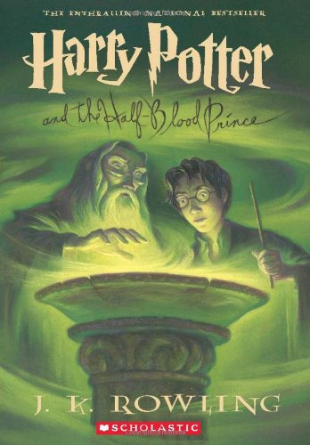

Valerie Landguth
About Me
I am a student at Eastern Washington University, studying Visual Communication Design. I am hoping to graduate with a bachelors degree after Fall 2018. I am 18 years old and my birthday is in July so I cannot wait for the Summer! In the Summer, I
like to go hiking, spend time at Lake Washington, and play Badminton in my backyard with my Husband and friends. When I am not doing homework, I like to play the guitar and play video games with my Husband. My favorite gaming consoles are the Nintendo
Switch and the Gamecube.
Favorite Movies
Super 8

In the summer of 1979, a group of friends in a small Ohio town witness a catastrophic train crash while making a super 8 movie and soon suspect that it was not an accident. Shortly after, unusual disappearances and inexplicable events begin to take place in town, and the local Deputy tries to uncover the truth - something more terrifying than any of them could have imagined.
Buy it Here

Forrest Gump
A simple-minded but kind-hearted Alabama boy grows up with his best friend - a beautiful girl called Jenny. He succeeds in life through a mixture of luck and destiny and thus influences and is present at some of the most important events in the second half of the 20th century.
Buy it Here
Rogue One

Former scientist Galen Erso lives on a farm with his wife and young daughter, Jyn. His peaceful existence comes crashing down when the evil Orson Krennic takes him away from his beloved family. Many years later, Galen becomes the Empire's lead engineer for the most powerful weapon in the galaxy, the Death Star. Knowing that her father holds the key to its destruction, Jyn joins forces with a spy and other resistance fighters to steal the space station's plans for the Rebel Alliance..
Buy it Here
My Favorite Book
Harry Potter and the Half Blood Prince Buy it here!
